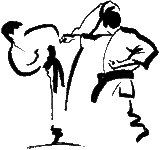

ABOUT SEIDOKAN KARATE...
 Many Karate styles and sub-styles on Okinawa are actually composites of older styles. Among these is Seidokan Karate. Founded by Sensei Shian Toma, the style came into existence in 1968 when Toma called his dojo "Seidokan," meaning the "place of the correct or proper way." In 1974, the Zen Okinawa Seidokan Karate Kobudo Renmei was formed to better serve its growing number of dedicated practitioners throughout the world. The style's core is Shorin-ryu with influences from Motobu-Ryu, Okinawa Kenpo, and Goju-Ryu.
Seidokan is a traditional Okinawan fighting (Kumite) art that includes kicking, punching and blocking techniques; throwing and joint-locking techniques (Toide); and the traditional weaponry of Okinawa (Kobudo). It is an extremely flexible and versatile system, requiring dedicated, open-minded students with a desire to develop strength, endurance, flexibility, dexterity and personal character.
SEIDOKAN KARATE IS A SELF-DEFENSE SYSTEM...
After World War II, Karate’s value for self defense, physical fitness, competition, and overall mental and physical development came to be increasingly recognized. However, as a martial art, it necessitated long and repeated careful study. Because the practice of Karate quickly became a “boom” industry in the West, the requirements of long and repeated careful study came to be overridden by the demands of today’s world for more rapid results and quicker development. The result was the emergence of many new sports using the name of Karate. To avoid confusion with these new sports, the public began calling the original Karate “Traditional Karate”.
Most martial arts today in the U.S. practice specifically to compete in sport competitions. This is a very exciting sport and there are a ton of great schools out there that vary in their training. However, Florida Seidokan Dojo teaches techniques that were designed for self-defense and the defense of others. Whereas, the goal in sport fighting is mainly fitness and fighting for "points", in self-defense, no one wants to fight...because it is for real.
One of the backbones of Seidokan Karate is the study of traditional sequences of choreographed techniques known as “kata.” As a Seidokan student starts along the path of learning kata, he/she is forced to concentrate on learning to move his/her body in a precise, purposeful and powerful way. Seidokan Karate students immediately begin to become stronger from the inside out from day one in kata training; developing not just their muscles, but their ability to focus as well.